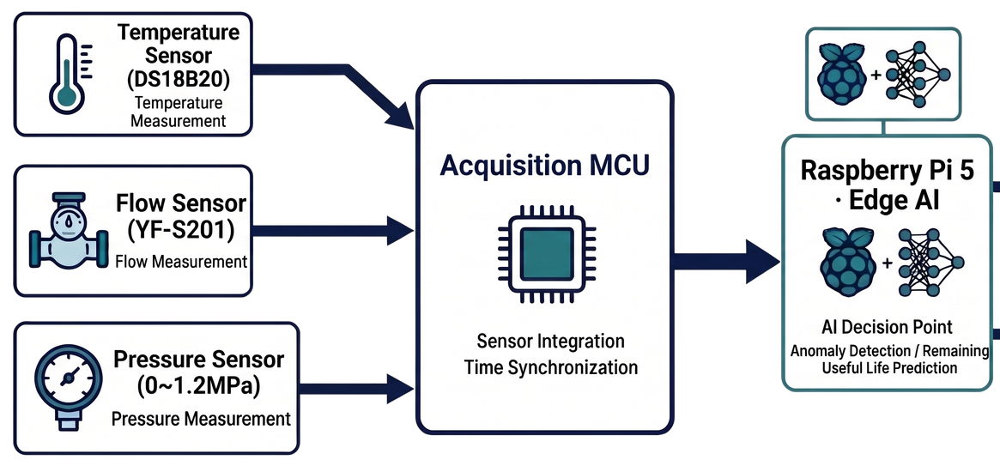
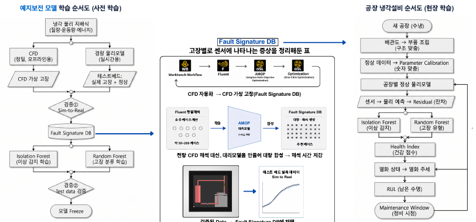

냉각수 순환설비의 점검 질문
물산업에 맞춰 다시 정의한 문제
STARTUP WATER 공모전의 물이용 분야를 위해 기존 0ERROR 냉각설비 상태감시 구상을 제안서로 정리했습니다. 대상은 산업용 냉각수 순환설비이며, 정상적인 운전 조건의 변화와 점검이 필요한 성능 저하를 구분하도록 돕는 서비스 개념입니다.
신호를 함께 보는 이유
온도 하나의 임계값만으로 설비 상태를 판단하기 어려운 상황을 생각했습니다. 온도·유량·압력과 물리모델의 예상값 사이 차이를 함께 검토하고, 막힘·펌프 저하·방열 저하의 점검 우선순위를 안내하는 방향을 제안했습니다.
기계 담당과 대회 대표
저는 기반 0ERROR 프로젝트의 기계 설계·제작 담당이자 이 제안의 팀 대표로 기록되어 있습니다. AI·대시보드 등 다른 분야는 팀의 담당을 구분합니다. 신청서와 제안서를 준비한 경험을 냉각진단 제품의 독자 개발 완료로 표현하지 않습니다.
기존 프로젝트와의 관계
이 사례와 R&D·제천 제안은 공통 개발 기반을 공유합니다. 서로 다른 공모 분야에 맞춰 문제와 평가·운영을 구성한 제안 경험으로 소개하며, 각각을 별도 현장 구축 성과나 독립 제품으로 중복 집계하지 않습니다.
물이용 분야에서 좁힌 대상
제안서는 중소 제조업의 수냉식 장비에서 펌프·배관·열교환기로 이루어진 냉각수 순환계를 대상으로 삼았습니다. 수질 정화나 처리 성능으로 범위를 넓히지 않고 유로 막힘, 펌프 저하, 방열 저하를 살피는 상태감시부터 시작하는 구상입니다. 기존0ERROR의 냉각진단을 물이용 관점에 맞춰 설명한 적용 제안입니다.
온도·유량·압력 센서 → MCU → 엣지 장치 → 측정값·정상범위·이상점수·점검 항목의 대시보드라는 구성을 적었습니다. 현장마다 배관규격·유체·펌프 운전 조건을 먼저 확인하고 정상 기준을 설정하도록 했습니다. 본인은 대표자와 기계설계·제작 역할, 동료들은 실험·열유체, 센서·회로, AI·대시보드, 고객·사업화를 나누는 구조입니다.
근거: Startup_Water_2026/04_아이디어제안서_0ERROR.pdf (1–5)
센서·분석 구조와 제안서 결과물

실제 준비한 자료
필수 신청·동의·서약 문서와 아이디어제안서의 HWPX·PDF, 같은 항목의 Word 문서를 준비했습니다. 포트폴리오에는 개인 동의서와 서명 대신 기술 제안 본문과 그 안의 도식을 결과물로 제시합니다.
도식의 의미
아래 첫 그림은 온도·유량·압력 신호를 수집 장치와 엣지 분석으로 연결하는 제안 구조입니다. 두 번째는 물리모델과 데이터의 차이를 검토하는 분석 흐름입니다. 실제 설치 사진이나 구현 완료 대시보드가 아니라 제안서에 사용한 개념도입니다. 그림 안의 남은 수명 예측 등 확장 표현 역시 달성된 기능을 뜻하지 않습니다.
평가 계획의 구성
고정 임계값, 원시 신호 기반 AI와 물리 잔차 기반 분석을 같은 조건에서 비교하는 개발·평가 방향을 적었습니다. 정상 조건과 이상 시나리오를 분리하고, 탐지와 오경보·지연을 함께 보려는 계획입니다. 문서의 실험 횟수와 진단 목표는 실제 달성 성능이 아닙니다.
결과물에서 볼 수 있는 역량
센서나 AI라는 요소를 나열하는 데서 그치지 않고, 담당자가 어떤 항목을 점검할지 설명하는 서비스 흐름으로 연결했습니다. 기계 설계와 계측, 판단 지원 사이의 관계를 문서로 정리한 제안 작업입니다.

물리 잔차와 고장 시나리오
기술 원고는 유량과 압력손실, 냉각수 입출구 온도차와 열교환의 관계로 정상 예상값을 계산하고 실측과의 차이인 잔차를 살피는 방식을 제안합니다. 같은 유량 감소라도 운전 조건 변화·막힘·펌프 저하의 원인이 다를 수 있어 여러 신호의 관계를 비교하려는 것입니다.
| 시나리오 | 제안한 재현 방법 | 관찰 항목 |
|---|---|---|
| 유로 막힘 | 밸브 개도 조정 | 유량·차압·정상 기준 변화 |
| 펌프 저하 | 구동 조건 조정 | 유량·압력 관계와 잔차 |
| 방열 저하 | 라디에이터 차폐 | 입출구 온도차·열교환 상태 |
CFD·대리모델은 사전 개발에서 조건별 합성자료를 만들고 실제 테스트베드와 대조한 범위만 사용하는 구상입니다. 현장에서는 정밀CFD를 매번 돌리는 대신 경량 모델과 진단을 실행하도록 역할을 구분했습니다.
설치와 성능의 앞단을 먼저 정의하기
원고는 모델을 비교하기 전 온도센서의 상대오차, 유량계 범위, 압력·차압 신호 안정성을 확인하고 각 측정에 실험번호·운전 조건·고장단계를 함께 적도록 했습니다. 센서값이 나왔다고 곧바로 고장과 연결하지 않고 계측의 안정성과 조건 식별을 먼저 확보하는 방향입니다. 누수와 기본작동이 확인되지 않으면 정상·고장 비교보다 조립·계측을 보완하는 단계조건을 두었습니다.
사업화 관점에서도 센서 부품 판매만 다루지 않았습니다. 현장별 설치·기준설정 절차, 고장 패턴의 정의, 반복실험과 운영이력이 축적할 자산이라는 구상을 썼습니다. 불필요한 설비정지와 점검공수, 실제 설치·유지비를 함께 비교하고, 유지관리 업체와 협력하는 도입 경로를 검토하도록 했습니다. 수냉식장비에서 데이터센터 등 다른 현장으로 넓히는 구상은 유체·운전 조건 차이를 확인한 뒤의 후속 방향입니다. 이 구조는 물이용 공모전 원고의 구체화 범위이며 계약·권리화·제품 판매 실적이 아닙니다.
근거: Startup_Water_2026/04_아이디어제안서_0ERROR.pdf (1–5)
현재 진행 단계와 현장 검증 계획
확인된 산출물
아이디어제안서와 관련 신청자료가 준비되어 있습니다. 독립적인 현장 설비 설치, 유상 고객, 진단 성능이나 물·전력 절감의 실측을 확인한 결과로 소개하지 않습니다. 기존 0ERROR 테스트베드 역시 설계·부품 검토와 조립 준비 맥락에서 설명합니다.
현장 적용 전에 확인할 조건
센서 범위와 설치 가능성, 정상 운전 부하와 외기 조건, 데이터 취득 주기와 결측을 확인해야 합니다. 물리모델의 차이가 고장 때문인지 운전 조건의 변화 때문인지 판단하려면 비교 조건과 기준선을 먼저 정해야 합니다. 후속 개발에서 필요한 질문입니다.
사용자의 판단을 지원하는 범위
초기 방향은 상태감시와 점검 안내입니다. 기존 보호장치의 기능을 대체하거나 검증되지 않은 판단으로 설비를 자동 정지시키는 시스템을 완성했다고 쓰지 않습니다. 현장 담당자가 근거를 보고 확인할 수 있는 역할을 목표로 합니다.
남긴 학습
같은 기술 구상도 적용 분야의 사용 목적에 맞춰 다시 설명해야 한다는 점을 경험했습니다. 물산업 제안에서는 설비 상태의 이해와 유지관리 판단을 중심으로 구성하고, 기대효과와 실제 검증의 거리를 분명하게 남겼습니다.
비교 계획과 경제성 판단
정상 48회 + 이상 48회 = 96회의 독립실험, 고정 임계값·원시신호AI·물리 잔차 분석의 동일 조건 비교를 계획했습니다. 오경보율5% 이하와 탐지율90% 이상은 개발 목표이며 측정 성과가 아닙니다. 실험번호 단위 학습·검증·시험 분리, 유형별 혼동, 탐지지연과 엣지 처리시간도 평가 항목입니다.
조립·누수·센서 확인 → 비교실험 → 현장 요구·소규모 적용 순서로 다음 단계의 시작 조건을 두었습니다. 첫해 320만원·월 10만원 구상은 가격 가설이며 판매가·매출이 아닙니다. 물 절감은 보충수량·배수량을 실제 계측할 수 있는 곳에서 확인하고 폐회로 자체를 절수 성과로 계산하지 않습니다. 제출용 제안서와 도식이 현재의 결과물이며 고객 확보·현장 효과·제품 성능은 후속 검증 대상입니다.
근거: Startup_Water_2026/04_아이디어제안서_0ERROR.pdf (1–5)
기록의 근거
근거: Startup_Water_2026의 아이디어 제안서 본문·PDF/HWPX, 신청서 및 제출 안내, Word 변환본. 원본의 개인 동의서와 서명은 공개하지 않았습니다.
2026-10-20 기준. 개인 담당과 팀 기여, 해석·계획과 실측·완료 결과를 구분했습니다.